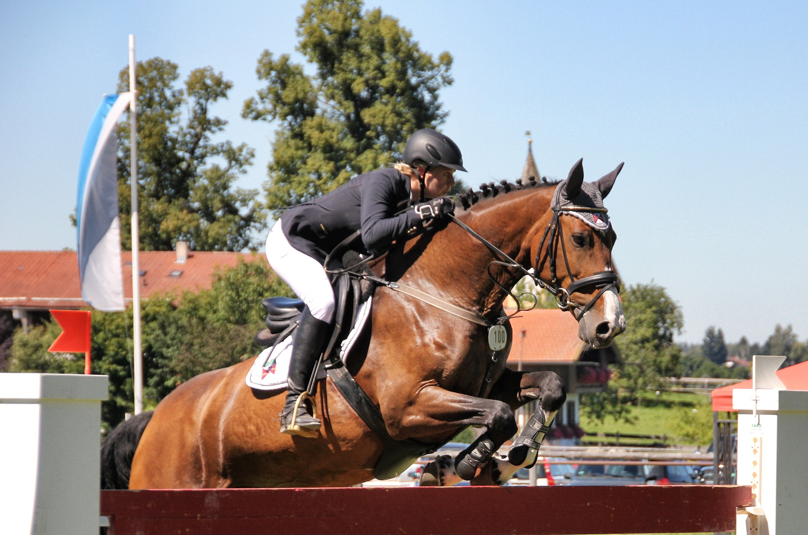

Remise en confiance
Pour les cavaliers qui reprennent ou qui veulent retrouver leurs sensations, sur des chevaux choisis pour leur calme.

Pour reprendre confiance, perfectionner sa technique, préparer un concours ou passer un galop.
Choisissez l'objectif qui vous correspond.
Pour les cavaliers qui reprennent ou qui veulent retrouver leurs sensations, sur des chevaux choisis pour leur calme.

Travail technique sur le plat et à l'obstacle. De quoi faire un vrai pas en avant.

Affûter son cheval et son mental avant l'échéance. Parcours, gestion du stress, dernière mise au point.

Théorie et pratique, examen blanc en fin de semaine. Du galop 1 au galop 7.
Le rythme des stages aux Écuries : monter deux fois par jour, soigner son cheval entre les deux, prendre le temps de la théorie.
Arrivée au club, attribution du cheval, pansage, sellerie. Le moment où l'on entre dans la journée.
Travail sur le plat ou à l'obstacle selon le thème du stage. Une heure et demie effective à cheval.
Pique-nique partagé sur place ou repas tiré du sac. Un moment convivial pour faire le point.
Selon le stage : connaissance du cheval, travail des longes, débriefing vidéo de la reprise du matin.
Deuxième mise en selle de la journée. Mise en application directe des apports de la matinée.
Pansage, retour au pré ou au box, retour à froid sur la journée avec le moniteur.

Les stages s'adaptent à votre niveau et à votre objectif. Possibilité de venir avec son propre cheval (pension comprise sur la durée du stage), ou de monter une cavalerie sélectionnée. Une évaluation rapide au démarrage permet d'ajuster le programme.
Définir mon stageLes places sont limitées par stage pour garantir la qualité de l'encadrement. Contactez-nous pour les prochaines dates.